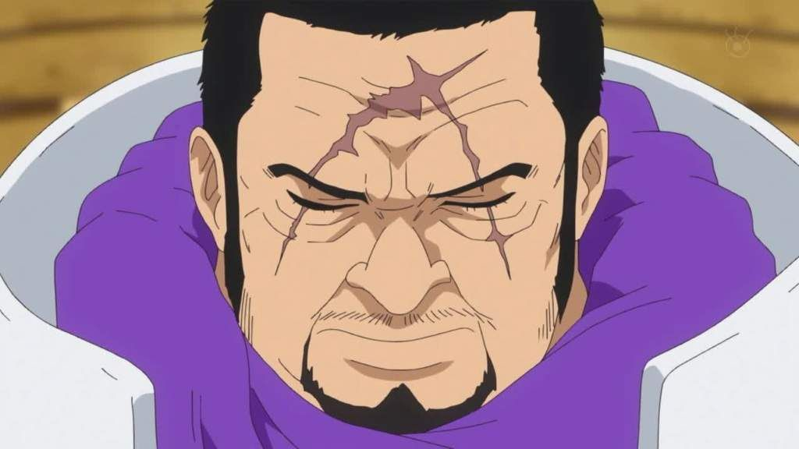
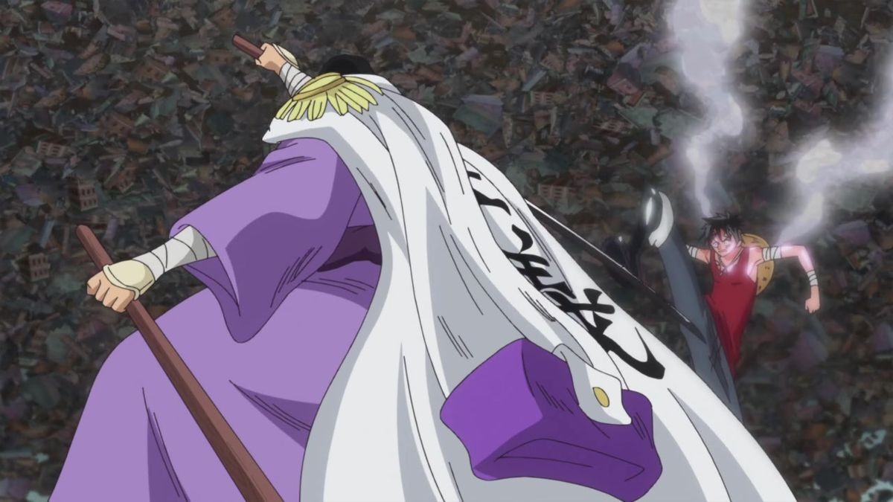
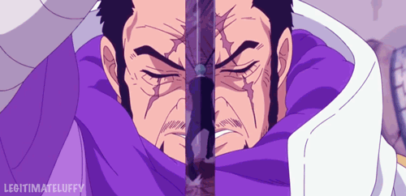
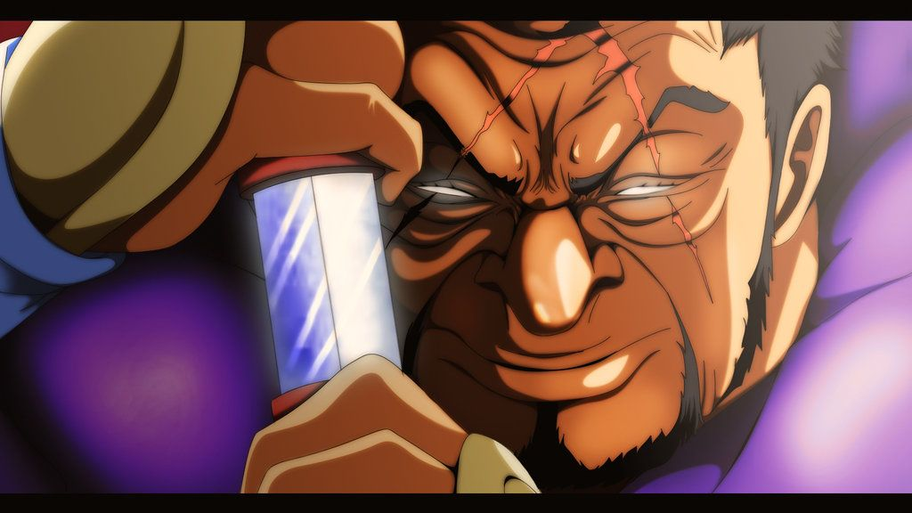
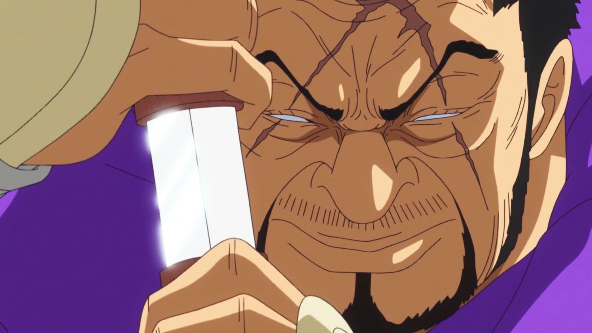

One Piece RP Bewerbung
Bewerbung zu Issho
══════ ⚔ ══════
Willkommen zu meiner Bewerbung. Hier möchte ich euch zeigen, wer ich bin, warum ich mich für Issho bewerbe und wie ich den Charakter im RP verkörpern möchte.
One Piece RP Bewerbung
Willkommen zu meiner Bewerbung. Hier möchte ich euch zeigen, wer ich bin, warum ich mich für Issho bewerbe und wie ich den Charakter im RP verkörpern möchte.


Mit dieser Bewerbung möchte ich euch einen ehrlichen Einblick in meine Motivation geben. Issho ist ein Charakter, der durch Ruhe, Stärke und klare Prinzipien auffällt. Genau diese Art möchte ich im RP glaubwürdig ausspielen.
Mein Name ist Julian, ich bin 17 Jahre alt und komme aus dem Odenwald in Hessen. In meiner Freizeit beschäftige ich mich viel mit Gaming und Roleplay. Außerdem beginne ich in naher Zukunft meine Ausbildung zum Feinwerkmechaniker. Mir sind Zuverlässigkeit, Teamarbeit und respektvoller Umgang besonders wichtig.

Meine RP-Erfahrung habe ich hauptsächlich auf verschiedenen JvS- (Jedi vs Sith) sowie Manga-RP-Servern gesammelt. Dort konnte ich viele Erfahrungen in Fraktions-RP, Charakterführung und Story-Aufbau sammeln. Durch verschiedene Rollen und Verantwortungsbereiche habe ich gelernt, wie wichtig Teamarbeit, Geduld und gutes RP für alle Beteiligten sind.
Issho überzeugt mich durch seine ruhige, gerechte und dennoch mächtige Ausstrahlung. Er handelt nicht blind, sondern nach seinen eigenen moralischen Vorstellungen. Genau diese Mischung macht ihn für mich besonders interessant.
Ich möchte Issho nicht nur als starken Kämpfer darstellen, sondern vor allem als ruhigen, überlegten und respektvollen Charakter. Seine Stärke soll nicht aus Arroganz kommen, sondern aus Erfahrung, Kontrolle und Überzeugung.

Mein Ziel ist es, mit Issho hochwertiges RP zu schaffen, spannende Situationen aufzubauen und anderen Spielern gute Momente zu geben. Ich möchte aktiv, zuverlässig und fair auftreten.
Zu meinen Stärken gehören Aktivität, Geduld, Teamfähigkeit und ein ruhiger Umgang mit Situationen. Natürlich bin ich nicht perfekt, aber ich arbeite daran, mich stetig zu verbessern und Kritik anzunehmen.

Vielen Dank fürs Lesen meiner Bewerbung. Ich hoffe, ich konnte euch zeigen, warum ich gut zu Issho passe und wie ich den Charakter im RP umsetzen möchte.